Receitas
Abaixo algumas receitas saudáveis:
Tapioca com queijo e ovo
Ingredientes para a massa:
- 1 xícara de chá de polvilho doce (130 gramas)
- 1 pitada de sal
- 4 colheres de sopa de água filtrada (60 ml)
Ingredientes para o recheio:
- 4 fatias de queijo mussarela
- 2 ovos grandes ou médios
Modo de preparo:
- Reúna todos os ingredientes para preparar essa massa de tapioca do zero e um recheio diferente e delicioso.
- Em um recipiente, coloque o polvilho doce. Aos poucos, vá despejando a água e misturando até o amido absorver e ficar com a aparência de gesso molhado. Cubra o recipiente com plástico filme e deixe na geladeira por 8 horas.
- Passado o tempo, caso perceba que tenha água demais, pode colocar um pouco mais de polvilho, ou descartar o excesso. Depois, coloque um pano de prato por cima, para absorver o excesso de umidade.
- Agora, quebre a massa em pedaços e depois peneire ela para ficar uma farinha modelável, sedosa e úmida. Aqui, você pode temperar com uma pitada de sal.
- Para preparar uma porção, em uma frigideira antiaderente e fora do fogo, coloque duas fatias de queijo mussarela. Por cima, polvilhe a massa de tapioca, espalhando por toda superfície do queijo e deixe uniforme (cubra todas as fatias).
- Em um recipiente pequeno, quebre um ovo (verifique se ele está bom), tempere com sal e bata levemente. Despeje por cima da tapioca, tampe e ligue o fogo bem baixo, caso a chama ainda seja alta, você pode colocar uma segunda grade para a frigideira ficar mais afastada do fogo.
- Assim que o queijo derreter e o ovo cozinhar, feche a tapioca, dê uma douradinha a mais e, com cuidado, retire da frigideira. A massa rende 2 porções, então é só repetir os passos 5 e 6 para preparar outra tapioca recheada. Agora é só servir no seu café da manhã ou no lanche da tarde. Bom apetite!
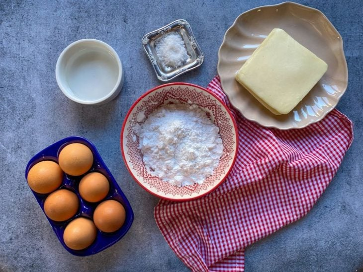
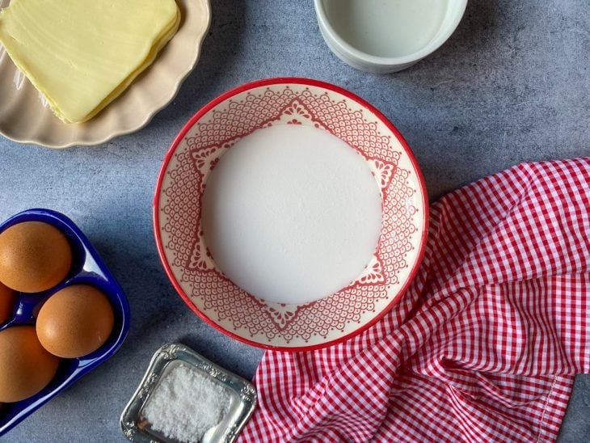
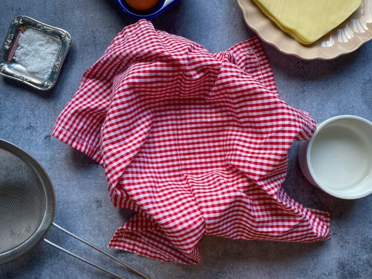
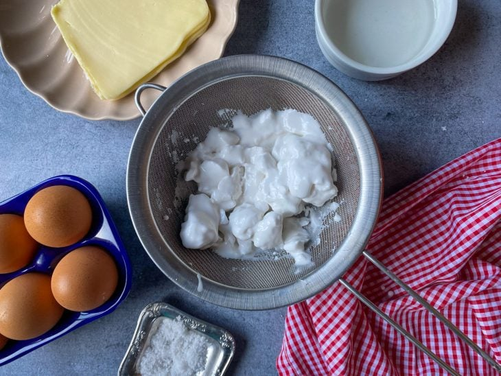
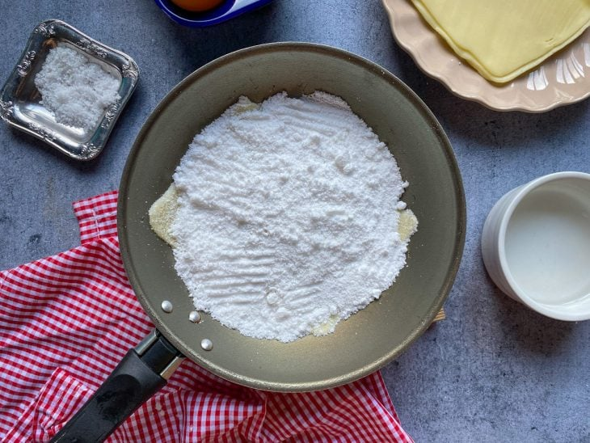
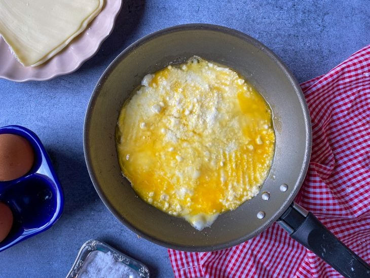
Avocado toast com ovo
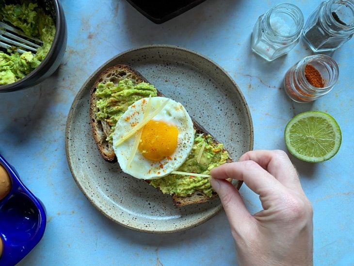Ingredientes:
- 1 pão de forma de sua preferência
- 1 abacate avocado (175 gramas)
- 1/4 de colher de chá de sal (ou a gosto)
- 1/8 de colher de chá pimenta-do-reino (ou a gosto)
- Caldo de 1/2 limão
- 1 ovo
- 1 fio de azeite (ou 1 colher de sopa de manteiga)
- 1 pitada de páprica defumada
- Lascas de parmesão a gosto (ou mussarela ralada)
Modo de preparo:
- Reúna todos os ingredientes para preparar um avocado toast com ovo, receita clássica dos brunchs americanos. E já deixe uma frigideira esquentando no fogo.
- Corte uma fatia grossa do seu pão e toste ela, dos dois lados, em uma frigideira bem quente sem nenhuma gordura - você também pode tostar na sanduicheira elétrica. Reserve.
- Higienize o seu abacate avocado, descasque, retire toda a polpa e amasse bem até formar uma pastinha. Tempere ela com sal, pimenta e caldo de limão, misture e reserve.
- Em uma frigideira, esquente o azeite (ou derreta a manteiga) e frite o ovo (verifique se ele está bom, antes de fritá-lo). Assim que a clara estiver cozida, você pode desligar o fogo - caso goste da gema mais durinha, deixe cozinhar mais um pouco com a frigideira tampada.
- Agora é hora de montar o toast: pegue a fatia de pão tostado e passe a pastinha de avocado por toda a superfície. Disponha o ovo por cima e tempere com um pouquinho de sal e páprica defumada.
- Finalize com as lascas de parmesão e sirva esse lanche saboroso e leve. Ele fica perfeito para um café da manhã ou um lanche da tarde. Bom apetite!
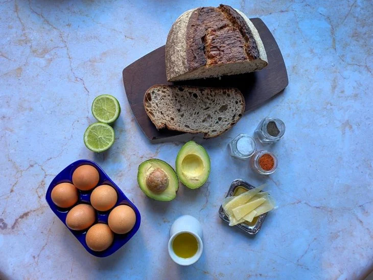
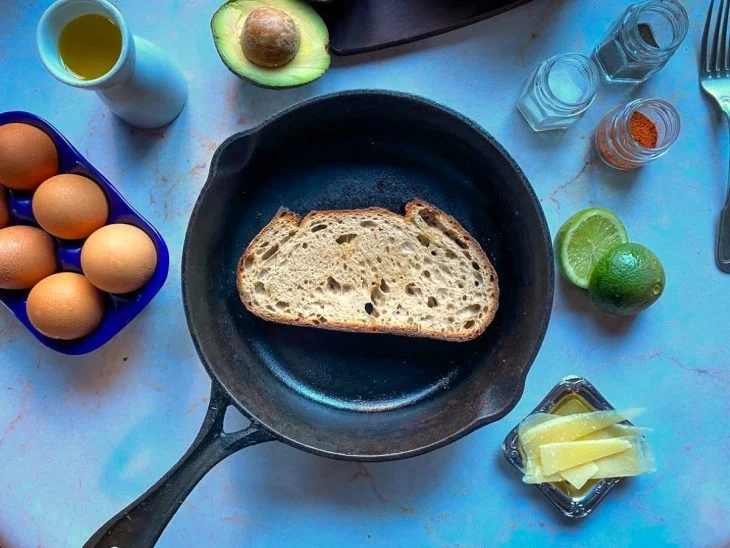
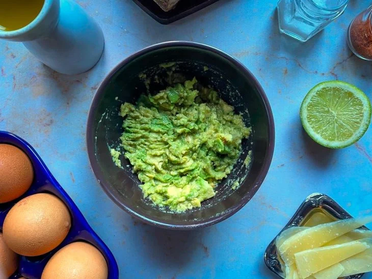
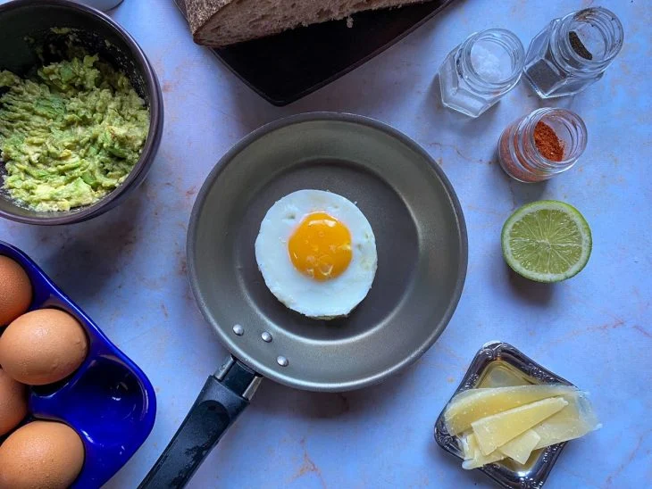
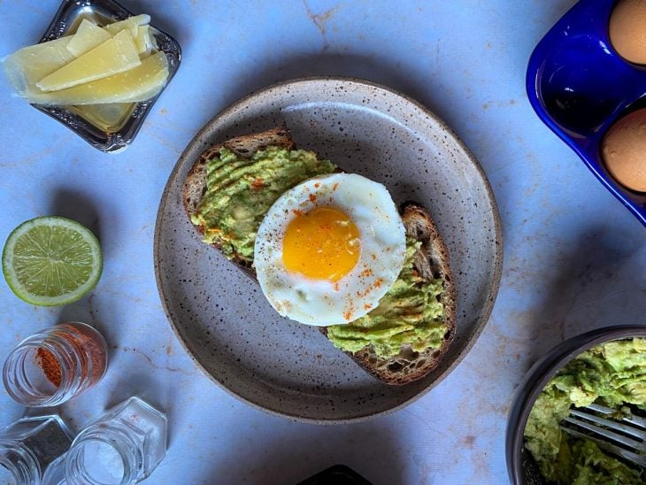
Strogonoff fit com iogurt
Ingredientes:
- 300 gramas de filé de peito de frango
- 2 colheres de sopa de azeite (ou a gosto)
- 100 gramas de cebola (ou a gosto)
- 2 dentes de alho (ou a gosto)
- 1 colher de café de sal (ou a gosto)
- 1/2 colher de café de lemon pepper (ou a gosto)
- 1/2 colher de café de pimenta-do-reino (ou a gosto)
- 1/2 colher de café de louro em pó (ou a gosto)
- 1/2 colher de café de páprica doce (ou a gosto)
- 3 colheres de sopa de molho de tomate
- 4 colheres de sopa de milho (opcional)
- 1 pote de iogurte natural (170 gramas)
Modo de preparo:
- Reúna os ingredientes para fazer o strogonoff fit com iogurte e aproveite um prato saboroso e mais saudável que o tradicional.
- Em uma tábua, corte o frango em pedaços pequenos ou médios. Descasque e corte a cebola e o alho finamente.
- Leve uma frigideira no fogo alto e coloque o azeite. Quando estiver quente, coloque a cebola e o alho para refogar por cerca de 3 minutos.
- Quando estiver douradinho, adicione o frango em cubos e mexa com a espátula ou colher até eles mudarem de cor e ficarem brancos. Tempere com sal, páprica defumada, açafrão e continue misturando bem.
- Acrescente o molho de tomate e mexa novamente até ficar homogêneo.
- Adicione o milho e o iogurte natural, misture sem parar até a carne ficar com um molhinho cremoso.
- Sirva o strogonoff fit com iogurte e aproveite essa refeição cheia de sabor. Bom apetite!
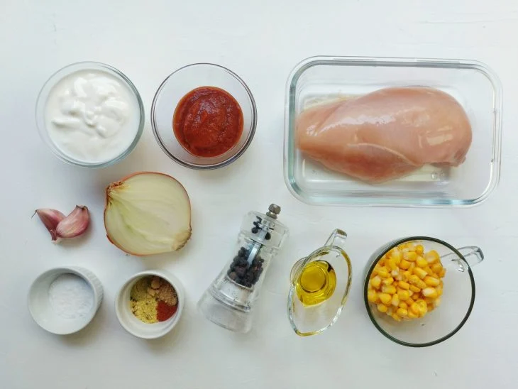
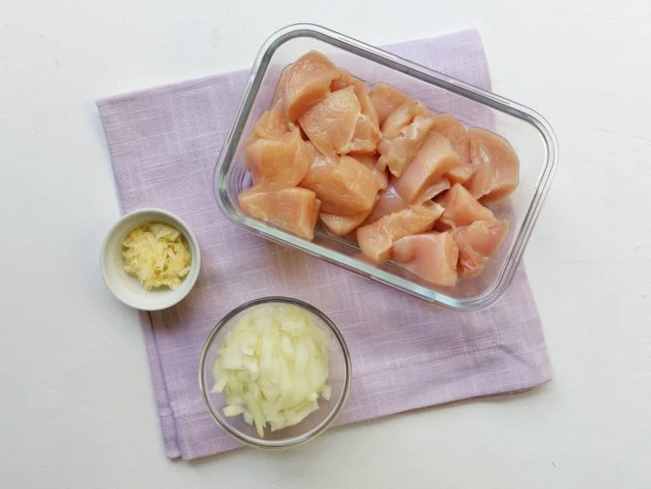
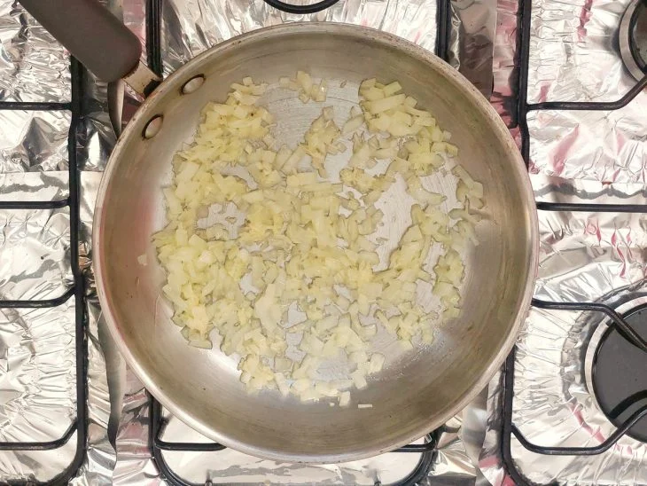
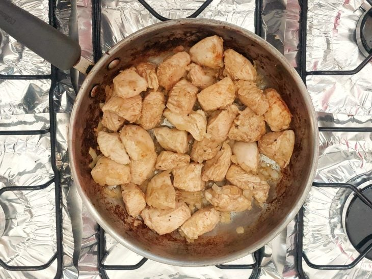
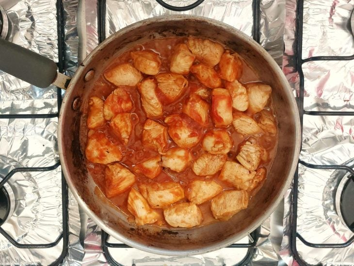
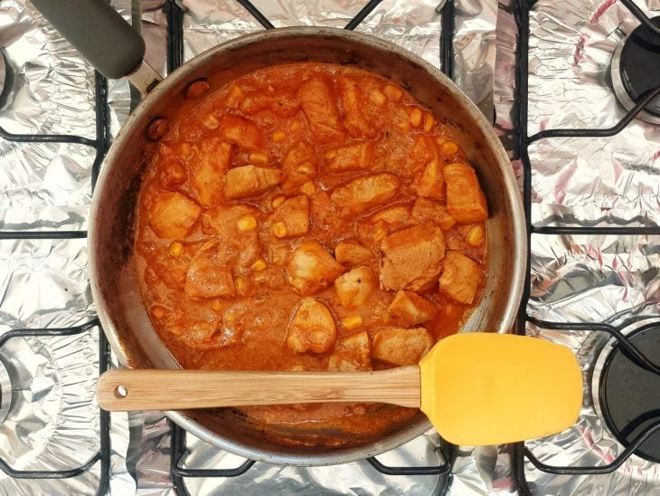
Salada fitness no pote
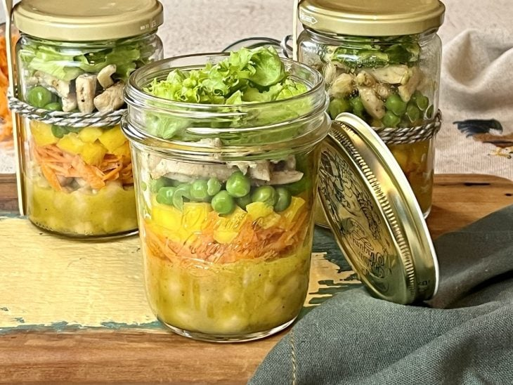Ingredientes da salada:
- 220 gramas de grão-de-bico
- 1 colher de chá de bicarbonato de sódio (para o grão-de-bico)
- 3 xícaras de chá de água (para o cozimento do grão-de-bico) (720 ml)
- 220 gramas de peito frango em tiras
- 1 colher de chá de sal (ou a gosto)
- 1/4 de colher de chá de pimenta-do-reino (ou a gosto)
- Azeite a gosto
- 130 gramas de cenoura
- 140 gramas de manga
- 140 gramas de ervilha
- 20 gramas de minialface lisa ou crespa
Ingredientes do molho:
- 3 colheres de sopa de mostarda
- 2 colheres de chá de vinagre de maçã
- 2 colheres de sopa de mel
- 4 colheres de sopa de azeite
- 1/2 colher de chá de sal (ou a gosto)
- 1/4 de colher de chá de pimenta-do-reino (ou a gosto)
Modo de preparo:
- Reúna todos os ingredientes para preparar uma salada fitness no pote, perfeita para as suas marmitinhas saudáveis.
- Comece deixando o grão-de-bico cozido: em um recipiente, coloque o grão-de-bico, cubra com água, adicione o bicarbonato (isso vai ajudar a diminuir o tempo de cozimento depois) e deixe de molho por 8 a 12 horas.
- Passado o tempo, descarte a água e passe o grão-de-bico para uma panela de pressão. Cubra com 3 xícaras de chá de água, tampe e deixe cozinhar, em fogo médio, por 8 minutos, contados após pegar pressão. Deixe a pressão sair, descarte a água e reserve os grãos cozidos.
- Para o molho: em um recipiente, coloque a mostarda, o vinagre, o mel, o azeite, o sal e a pimenta. Misture bem - você pode tampar e chacoalhar, para incorporar tudo. Reserve.
- Descasque a cenoura e corte ela em tiras. Descasque a manga e corte em cubos médios ou pequenos (depende do tamanho do seu pote). Separe as folhas de alface e deixe elas higienizadas. Reserve tudo.
- Em uma frigideira, esquente o azeite e coloque as tiras de frango. Tempere elas com sal e pimenta, e deixe refogar até as tirinhas ficarem douradas dos dois lados. Desligue e o fogo e deixe a carne mornar.
- Para a montagem, separe os potes e siga os passos a seguir: coloque um pouco do molho no fundo, depois um pouco de grão-de-bico cozido, as tirinhas de cenoura, os cubos de manga, um pouco das ervilhas, tirinhas de frango e, por último, as folhas de alface.
- Agora é só saborear a sua saladinha fit no pote. Você pode tampar os potes e reservar por até 2 dias na geladeira. Aproveite!
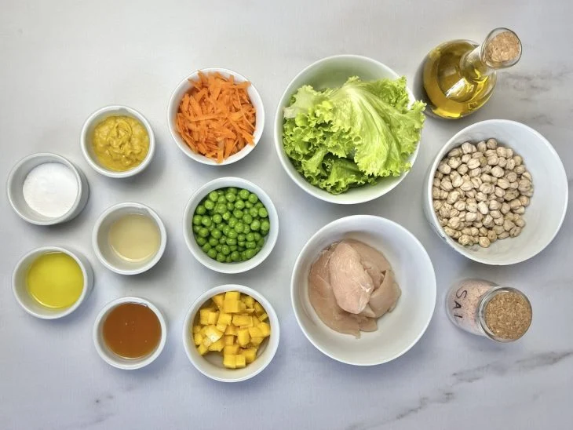
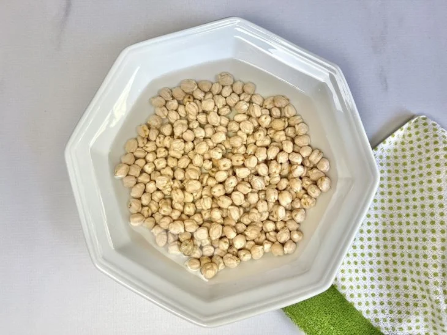
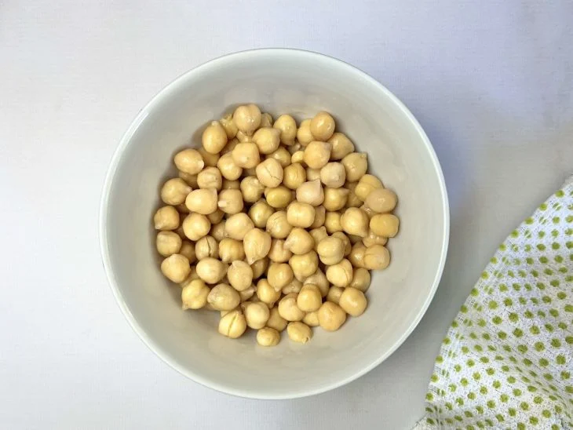
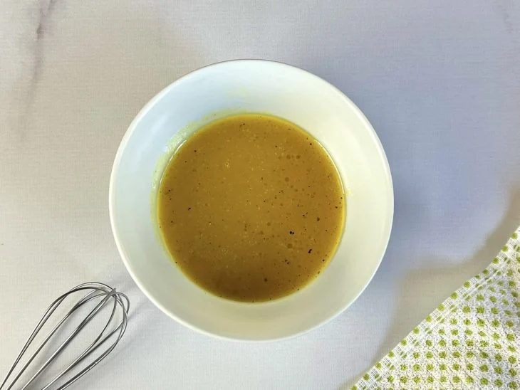
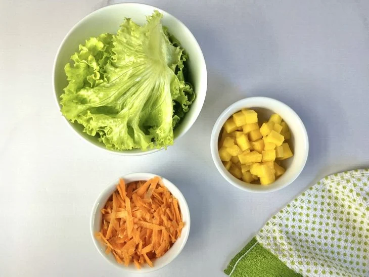
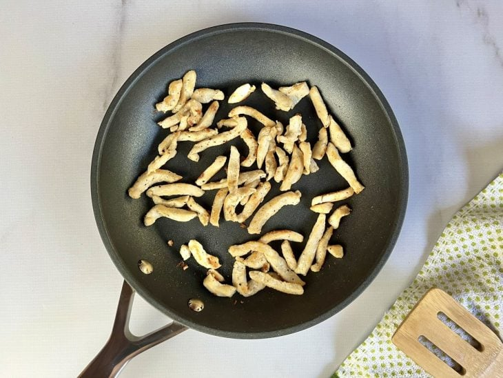
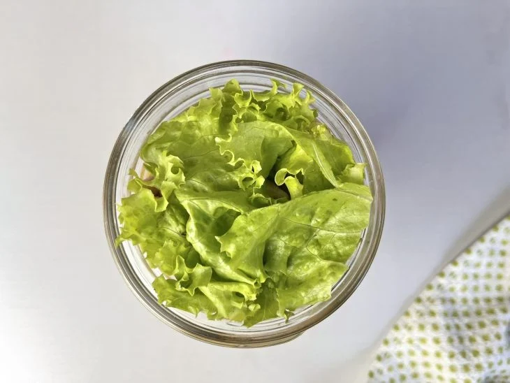